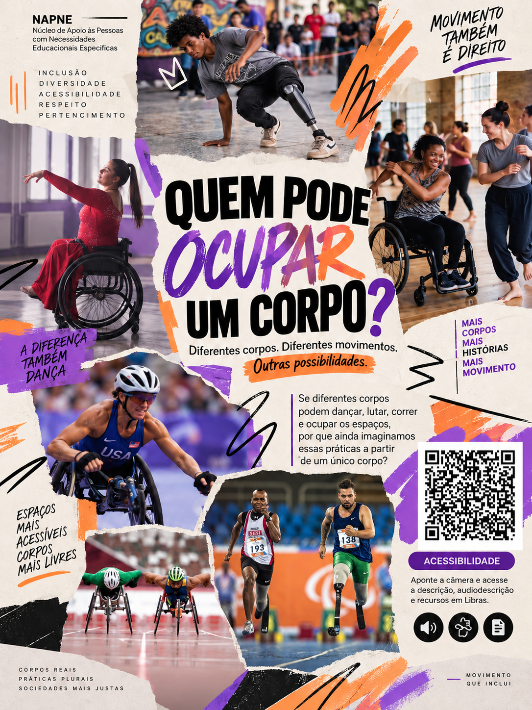

Painel 04
Quem pode ocupar um corpo?
O último painel desloca a pergunta para o centro: se corpos diferentes podem dançar, lutar, correr e ocupar os espaços, por que ainda imaginamos um único corpo?
Imagem do painel 04

Descrição do painel
Quem pode ocupar um corpo?
O último painel desloca a pergunta para o centro: se corpos diferentes podem dançar, lutar, correr e ocupar os espaços, por que ainda imaginamos um único corpo?
O painel convida a observar as práticas corporais para além de um modelo único de corpo, habilidade ou participação. A composição aproxima imagens e narrativas para evidenciar acessibilidade, cultura e pertencimento.
Audiodescrição
Audiodescrição detalhada: painel vertical com fundo creme e uma colagem de fotografias e elementos gráficos em preto, roxo e laranja. Na parte superior, aparece uma pessoa com prótese praticando uma modalidade esportiva em uma área urbana. À esquerda, uma mulher em cadeira de rodas dança em um ambiente interno. À direita, duas mulheres participam de uma atividade de dança, uma delas utilizando cadeira de rodas. Na parte inferior esquerda, atletas em cadeiras de corrida disputam uma prova. Na parte inferior central, dois atletas correm em uma pista, ambos utilizando próteses nas pernas. No centro, uma grande área clara traz a pergunta “QUEM PODE OCUPAR UM CORPO?”. Abaixo aparecem as frases “Diferentes corpos. Diferentes movimentos. Outras possibilidades.” e uma reflexão sobre corpos que podem dançar, lutar, correr e ocupar espaços. À direita há um QR Code acompanhado da indicação de acessibilidade, descrição, audiodescrição e recursos em Libras. O painel questiona a ideia de um único padrão corporal e apresenta diferentes formas de participação e ocupação dos espaços.